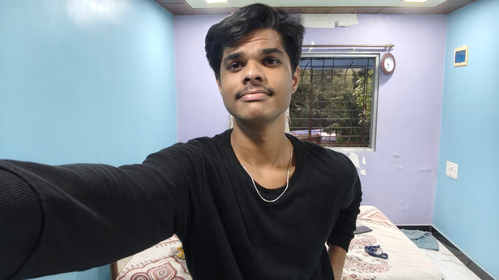

COMPUTER ENGINEERING · MUMBAI, INDIA
PORTFOLIO / 2026—27
HELLO, WORLD. I'M
Jay Keluskar.
FIG. 01
THE BUILDER

JK
JAY KELUSKAR
AI / SOFTWARE
MODEL
THINKING
THINKING
SYSTEM
BUILDING
BUILDING
JK
CURIOUS
BY DESIGN
BY DESIGN
I BUILD
|
I turn data, models and ideas into useful systems — from predictive machine learning pipelines to privacy-aware intelligence and full-stack products.
SCROLL TO EXPLORE
ENGINEERING WITH INTENT.
ARTIFICIAL INTELLIGENCE✳
MACHINE LEARNING✳
BACKEND SYSTEMS✳
COMPUTER VISION✳
REINFORCEMENT LEARNING✳
ARTIFICIAL INTELLIGENCE✳
MACHINE LEARNING✳
BACKEND SYSTEMS✳
COMPUTER VISION✳
REINFORCEMENT LEARNING✳
01 / THE PERSON
A LITTLE CONTEXT
ABOUT ME
Curiosity is the
starting point.
Engineering is the
execution.
I'm a third-year B.Tech Computer Engineering student at Vidyalankar Institute of Technology, University of Mumbai.
I enjoy taking ideas from a raw dataset to a working product. My work explores predictive ML, federated and privacy-preserving learning, reinforcement learning, computer vision, fintech analytics and security-aware automation.
Beyond building, I write about technology and governance, explore open-source communities and keep sharpening my problem-solving skills. I'm seeking AI/ML or software engineering internship opportunities.
LET'S CONNECT ↗
02 / SELECTED WORK
IDEAS MADE TANGIBLE
Selected projects.
Experiments, systems and products — each one a different problem to understand and solve.
03 / TOOLKIT
TOOLS OF THE TRADE
My technical stack.
A practical toolkit across languages, intelligent systems, frameworks and data infrastructure.
ALSO INTERESTED IN
Robotics ✳ Autonomous Systems ✳ Space Technology ✳ Sports Analytics ✳ Open Source
04 / THE JOURNEY
LEARNING IN MOTION
Learning.
Building.
Repeating.
Education, milestones and experiences that have shaped the way I approach engineering.
05 / CREDENTIALS
PROOF OF PROGRESS
Certifications &
simulations.
Formal learning and practical industry-oriented experiences.
06 / IDEAS IN WORDS
RESEARCH & WRITING
Thinking out loud.
Writing is another way I investigate systems — technical, social and everything in between.
07 / EDUCATION
ACADEMIC FOUNDATION
SEP 2024 — PRESENT
Vidyalankar Institute
Vidyalankar Institute
of Technology
University of Mumbai · Mumbai, India
B.Tech — Computer Engineering
SEMESTER 1 & 2
9.61
SEMESTER 3
9.70
SEMESTER 4
9.86
OVERALL CGPA
9.7/10
77%
Maharashtra State Board
Physics, Chemistry, Mathematics + Computer Science
94.40%
Maharashtra State Board
Academic Excellence Award
RELEVANT COURSEWORK
Data Structures & Algorithms · Object-Oriented Programming · Database-Driven Applications · AI/ML and Intelligent Systems · Full-Stack Foundations
HAVE A GOOD PROBLEM?
Let's make
Let's make
something matter.
Open to AI/ML and software engineering internships, research conversations and interesting collaborations.
jaykeluskar106@gmail.com ↗ GHATKOPAR (W), MUMBAI — 400084, INDIA